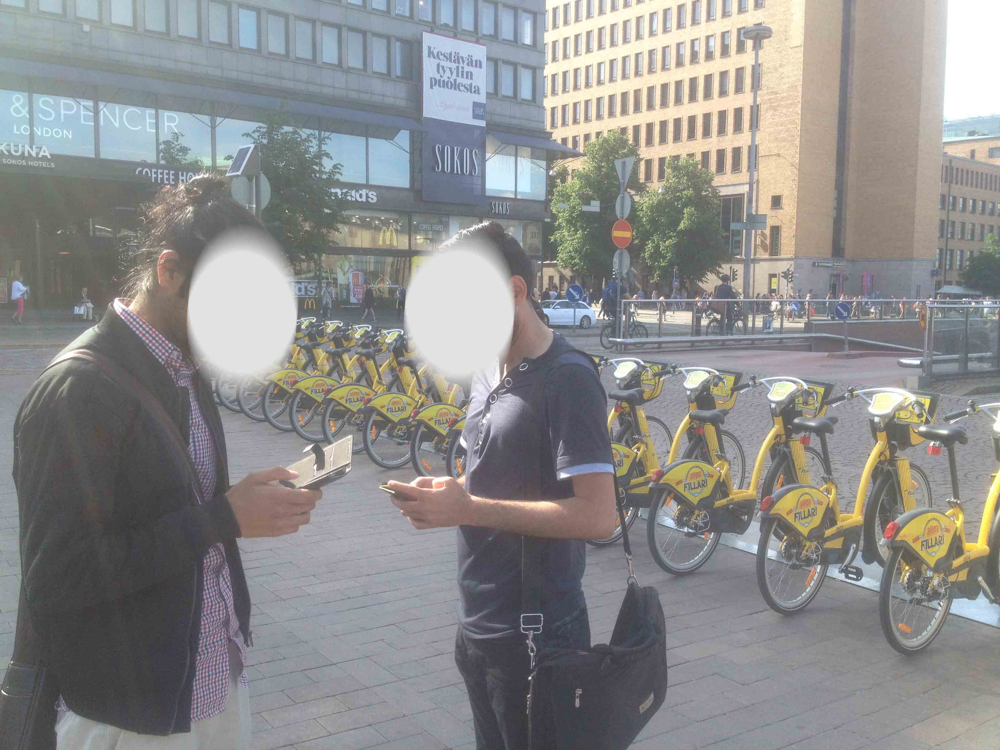
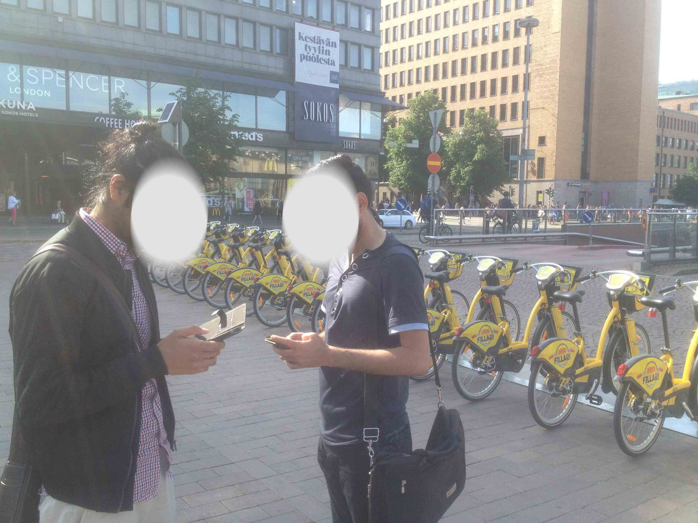

Design Process

iOS App Redesign
Helsinki City Bikes started in 2016 in the heart of Helsinki. Personally I am a big fan of city bikes. Since the beginning, I have been using an app called “Helsinki Bikes”. Although it is not an official app, it has been very useful and often saves lots of my time. The app was developed by Anteneh Seifu. Because I have been using this app since 2016, I see many possibilities to make it better in terms of usability. At the end of this case study, I will send the new designs to the product owner/developer and suggest him if he wants to adapt to the new design.
Research, User Flows, Information Architecture, Sketching, Wireframing, UI, Prototyping, User testing
2 weeks
I wanted to learn about how people are using city bikes, whether they depend on apps like Helsinki Bikes? how do they feel about it? What they like about city bikes and how they would expect it to have it better. I conducted interviews with 11 regular users of city bikes who also use Helsinki Bikes app. The users were aged between 19 and 32. The questions focuses on their usage of city bikes and Helsinki Bikes app.
Following are the highlights :
 

Being an active user myself and hearing all this feedback from other users, I found the following major pain points.
7 of the users preferred to have recent station locations stored in the app so they don’t have to worry about remembering the addresses and it is easy to navigate with one hand while riding the bike.
Heading to any destination on a city bike hoping to find a station nearby is stressful and a huge problem. Often users have to look around and go a bit farther to return the bike.
Heading to any destination on a city bike hoping to find a station nearby is stressful and a huge problem. Often users have to look around and go a bit farther to return the bike.
3 of the users got a penalty because their bike was not locked.
9 of the users said it is difficult to ride when they have to check navigation from another app which also consumes their battery because of multiple apps running on the background.
4 of the users said city bikes should have a mobile phone mount. This way they could focus on traffic while riding.
I have received lots of opinions, comments, and suggestions from users and all the participants in the study were facing some common issues. For better understanding, I made a workflow of the current scenario.

I used the findings to construct a provisional persona, Andrei, to help me understand how I can help him/our users achieve their goal using Doctual. Meet Andrei, a 32-year old entrepreneur who has a startup that recently got government funding and are expecting to grow in Nordic market

We opted for a lean approach which emphasized rapid sketching, prototyping, user feedback and design mockups. This created early team‐wide alignment, sparked tons of great ideas and created a strong sense of ownership. This gave everyone a clear idea of what we are building next.
The first version of Doctual was intended for startups. The workflow was easy to follow. It was based on user’s feedback. Following points were the main features of the first version:
Working as a Product Designer at Doctual was a great opportunity for me to learn and gain experience. I got to interact with other startups, lawyers and took part in many events, interviewed users, I learned to understand users’ pain points and solve them with better design. It gave me insight into the startup and taught me to think from a business point of view. Even though Doctual did not continue, it made me prepared for new challenges.
If you would like to know more details on what I did for almost 2 years in Doctual, feel free to contact me, I will be glad to share more in-depth.